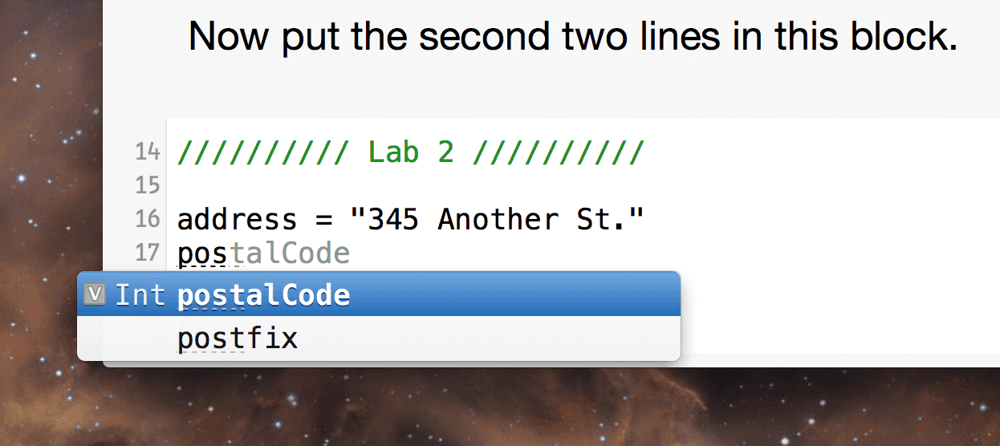

That works! Did you notice something?

Xcode can complete typing the variable names. Even though there are separate Swift blocks in this playground, they are all considered part of one Swift file. This is actually very nice. We can do things like create functions in one block and use them in another.
We can declare things that hold data in another way. We don't call these 'variables' since once they are declared their values can't be changed. They are called Constants.
We use the keyword let to declare a constant.
1 | let minimumHeightInMeters = 1.2192
|
Once a constant is assigned a value that value can't be changed. Let's try that anyway. Create a constant and then try to change it's value.